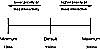

Article Description
Learn all of your favorite Linux scheduling ins and outs: policy, the scheduling algorithm, preemption and context switching, real-time scheduling, and Scheduler-Related System Calls.Chapter 3: Scheduling
The scheduler is the component of the kernel that selects which process to run next. The scheduler (or process scheduler, as it is sometimes called) can be viewed as the code that divides the finite resource of processor time between the runnable processes on a system. The scheduler is the basis of a multitasking operating system such as Linux. By deciding what process can run, the scheduler is responsible for best utilizing the system and giving the impression that multiple processes are simultaneously executing.
The idea behind the scheduler is simple. To best utilize processor time, assuming there are runnable processes, a process should always be running. If there are more processes than processors in a system, some processes will not always be running. These processes are waiting to run. Deciding what process runs next, given a set of runnable processes, is a fundamental decision the scheduler must make.
Multitasking operating systems come in two flavors: cooperative multitasking and preemptive multitasking. Linux, like all Unix variants and most modern operating systems, provides preemptive multitasking. In preemptive multitasking, the scheduler decides when a process is to cease running and a new process is to resume running. The act of involuntarily suspending a running process is called preemption. The time a process runs before it is preempted is predetermined, and is called the timeslice of the process. The timeslice, in effect, gives each process a slice of the processor's time. Managing the timeslice enables the scheduler to make global scheduling decisions for the system. It also prevents any one process from monopolizing the system. As we will see, this timeslice is dynamically calculated in the Linux scheduler to provide some interesting benefits.
Conversely, in cooperative multitasking, a process does not stop running until it voluntary decides to do so. The act of a process voluntarily suspending itself is called yielding. The shortcomings of this approach are numerous: The scheduler cannot make global decisions regarding how long processes run, processes can monopolize the processor for longer than the user desires, and a hung process that never yields can potentially bring down the entire system. Thankfully, most operating systems designed in the last decade have provided preemptive multitasking, with Mac OS 9 and earlier being the most notable exceptions. Of course, Unix has been preemptively multitasked since the beginning.
During the 2.5 kernel series, the Linux kernel received a scheduler overhaul. A new scheduler, commonly called the O(1) scheduler because of its algorithmic behavior1, solved the shortcomings of the previous Linux scheduler and introduced powerful new features and performance characteristics. In this section, we will discuss the fundamentals of scheduler design and how they apply to the new O(1) scheduler and its goals, design, implementation, algorithms, and related system calls.
Policy
Policy is the behavior of the scheduler that determines what runs when. A scheduler's policy often determines the overall feel of a system and is responsible for optimally utilizing processor time. Therefore, it is very important.
I/O-Bound Versus Processor-Bound Processes
Processes can be classified as either I/O-bound or processor-bound. The former is characterized as a process that spends much of its time submitting and waiting on I/O requests. Consequently, such a process is often runnable, but only for short periods, because it will eventually block waiting on more I/O (this is any type of I/O, such as keyboard activity, and not just disk I/O). Conversely, processor-bound processes spend much of their time executing code. They tend to run until they are preempted because they do not block on I/O requests very often. Because they are not I/O-driven, however, system response does not dictate that the scheduler run them often. The scheduler policy for processor-bound processes, therefore, tends to run such processes less frequently but for longer periods. Of course, these classifications are not mutually exclusive. The scheduler policy in Unix variants tends to explicitly favor I/O-bound processes.
The scheduling policy in a system must attempt to satisfy two conflicting goals: fast process response time (low latency) and high process throughput. To satisfy these requirements, schedulers often employ complex algorithms to determine the most worthwhile process to run, while not compromising fairness to other, lower priority, processes. Favoring I/O-bound processes provides improved process response time, because interactive processes are I/O-bound. Linux, to provide good interactive response, optimizes for process response (low latency), thus favoring I/O-bound processes over processor-bound processors. As you will see, this is done in a way that does not neglect processor-bound processes.
Process Priority
A common type of scheduling algorithm is priority-based scheduling. The idea is to rank processes based on their worth and need for processor time. Processes with a higher priority will run before those with a lower priority, while processes with the same priority are scheduled round-robin (one after the next, repeating). On some systems, Linux included, processes with a higher priority also receive a longer timeslice. The runnable process with timeslice remaining and the highest priority always runs. Both the user and the system may set a processes priority to influence the scheduling behavior of the system.
Linux builds on this idea and provides dynamic priority-based scheduling. This concept begins with the initial base priority, and then enables the scheduler to increase or decrease the priority dynamically to fulfill scheduling objectives. For example, a process that is spending more time waiting on I/O than running is clearly I/O bound. Under Linux, it receives an elevated dynamic priority. As a counterexample, a process that continually uses up its entire timeslice is processor bound—it would receive a lowered dynamic priority.
The Linux kernel implements two separate priority ranges. The first is the nice value, a number from –20 to 19 with a default of zero. Larger nice values correspond to a lower priority—you are being nice to the other processes on the system. Processes with a lower nice value (higher priority) run before processes with a higher nice value (lower priority). The nice value also helps determine how long a timeslice the process receives. A process with a nice value of –20 receives the maximum timeslice, whereas a process with a nice value of 19 receives the minimum timeslice. Nice values are the standard priority range used in all Unix systems.
The second range is the real-time priority, which will be discussed later. By default, it ranges from zero to 99. All real-time processes are at a higher priority than normal processes. Linux implements real-time priorities in accordance with POSIX. Most modern Unix systems implement a similar scheme.
1O(1) is an example of big-o notation. Basically, it means the scheduler can do its thing in constant time, regardless of the size of the input. A full explanation of big-o notation is in Appendix D, for the curious.
Timeslice
The timeslice2 is the numeric value that represents how long a task can run until it is preempted. The scheduler policy must dictate a default timeslice, which is not simple. A timeslice that is too long will cause the system to have poor interactive performance; the system will no longer feel as if applications are being concurrently executed. A timeslice that is too short will cause significant amounts of processor time to be wasted on the overhead of switching processes, as a significant percentage of the system's time will be spent switching from one process with a short timeslice to the next. Furthermore, the conflicting goals of I/O-bound versus processor-bound processes again arise; I/O-bound processes do not need longer timeslices, whereas processor-bound processes crave long timeslices (to keep their caches hot, for example).
With this argument, it would seem that any long timeslice would result in poor interactive performance. In many operating systems, this observation is taken to heart, and the default timeslice is rather low—for example, 20ms. Linux, however, takes advantage of the fact that the highest priority process always runs. The Linux scheduler bumps the priority of interactive tasks, enabling them to run more frequently. Consequently, the Linux scheduler offers a relatively high default timeslice (see Table 3.1). Furthermore, the Linux scheduler dynamically determines the timeslice of a process based on priority. This enables higher priority, allegedly more important, processes to run longer and more often. Implementing dynamic timeslices and priorities provides robust scheduling performance.
Figure 3.1 Process timeslice calculation.){kind=link}
Note that a process does not have to use all its timeslice at once. For example, a process with a 100 millisecond timeslice does not have to run for 100 milliseconds in one go or risk losing the remaining timeslice. Instead, the process can run on five different reschedules for 20 milliseconds each. Thus, a large timeslice also benefits interactive tasks—while they do not need such a large timeslice all at once, it ensures they remain runnable for as long as possible.
When a process's timeslice runs out, the process is considered expired. A process with no timeslice is not eligible to run until all other processes have exhausted their timeslice (that is, they all have zero timeslice remaining). At that point, the timeslices for all processes are recalculated. The Linux scheduler employs an interesting algorithm for handling timeslice exhaustion that is discussed in a later section.
2 Timeslice is sometimes called quantum or processor slice in other systems. Linux calls it timeslice.
Process Preemption
As mentioned, the Linux operating system is preemptive. When a process enters the TASK_RUNNING state, the kernel checks whether its priority is higher than the priority of the currently executing process. If it is, the scheduler is invoked to pick a new process to run (presumably the process that just became runnable). Additionally, when a process's timeslice reaches zero, it is preempted, and the scheduler is invoked to select a new process.
The Scheduling Policy in Action
Consider a system with two runnable tasks: a text editor and a video encoder. The text editor is I/O-bound because it spends nearly all its time waiting for user key presses (no matter how fast the user types, it is not that fast). Despite this, when it does receive a key press, the user expects the editor to respond immediately. Conversely, the video encoder is processor-bound. Aside from reading the raw data stream from the disk and later writing the resulting video, the encoder spends all its time applying the video codec to the raw data. It does not have any strong time constraints on when it runs—if it started running now or in half a second, the user could not tell. Of course, the sooner it finishes the better.
In this system, the scheduler gives the text editor a higher priority and larger timeslice than the video encoder, because the text editor is interactive. The text editor has plenty of timeslice available. Furthermore, because the text editor has a higher priority, it is capable of preempting the video encoder when needed. This ensure the text editor is capable of responding to user key presses immediately. This is to the detriment of the video encoder, but because the text editor runs only intermittently, the video encoder can monopolize the remaining time. This optimizes the performance of both applications.
The Scheduling Algorithm
The Linux scheduler is defined in kernel/sched.c. The scheduler algorithm and supporting code went through a large rewrite early in the 2.5 kernel development series. Consequently, the scheduler code is entirely new and unlike the scheduler in previous kernels. The new scheduler was designed to accomplish specific goals:
-
Implement fully O(1) scheduling. Every algorithm in the new scheduler completes in constant-time, regardless of the number of running processes or any other input.
-
Implement perfect SMP scalability. Each processor has its own locking and individual runqueue.
-
Implement improved SMP affinity. Naturally attempt to group tasks to a specific CPU and continue to run them there. Only migrate tasks from one CPU to another to resolve imbalances in runqueue sizes.
-
Provide good interactive performance. Even during considerable system load, the system should react and schedule interactive tasks immediately.
-
Provide fairness. No process should find itself starved of timeslice for any reasonable amount of time. Likewise, no process should receive an unfairly high amount of timeslice.
-
Optimize for the common case of only 1-2 runnable processes, yet scale well to multiple processors each with many processes.
The new scheduler accomplished these goals.
Runqueues
The basic data structure in the scheduler is the runqueue. The runqueue is defined in kernel/sched.c as struct runqueue. The runqueue is the list of runnable processes on a given processor; there is one runqueue per processor. Each runnable process is on exactly one runqueue. The runqueue additionally contains per-processor scheduling information. Consequently, the runqueue is the primary scheduling data structure for each processor. Why kernel/sched.c and not include/linux/sched.h? Because it is desired to abstract away the scheduler code and provide only certain interfaces to the rest of the kernel.
Let's look at the structure, with comments describing each field:
struct runqueue {
spinlock_t lock; /* spin lock which protects this
runqueue */
unsigned long nr_running; /* number of runnable tasks */
unsigned long nr_switches; /* number of contextswitches */
unsigned long expired_timestamp; /* time of last array swap */
unsigned long nr_uninterruptible; /* number of tasks in
uinterruptible sleep */
struct task_struct *curr; /* this processor's currently
running task */
struct task_struct *idle; /* this processor's idle task */
struct mm_struct *prev_mm; /* mm_struct of last running task
*/
struct prio_array *active; /* pointer to the active priority
array */
struct prio_array *expired; /* pointer to the expired
priority array */
struct prio_array arrays[2]; /* the actual priority arrays */
int prev_cpu_load[NR_CPUS];/* load on each processor */
struct task_struct *migration_thread; /* the migration thread on this
processor */
struct list_head migration_queue; /* the migration queue for this
processor */
atomic_t nr_iowait; /* number of tasks waiting on I/O
*/
}
Because runqueues are the core data structure in the scheduler, a group of macros is used to obtain specific runqueues. The macro cpu_rq(processor) returns a pointer to the runqueue associated with the given processor. Similarly, the macro this_rq() returns the runqueue of the current processor. Finally, the macro task_rq(task) returns a pointer to the runqueue on which the given task is queued.
Before a runqueue can be manipulated, it must be locked (locking is discussed in-depth in Chapter 7, "Kernel Synchronization Introduction"). Because each runqueue is unique to the current processor, it is rare when a processor desires to lock a different processor's runqueue (it does happen, however, as we will see). The locking of the runqueue prohibits any changes to it while the lock-holder is reading or writing the runqueue's members. The most common way of locking a runqueue is when you want to lock the runqueue a specific task runs on. In that case, the task_rq_lock() and task_rq_unlock()functions are used:
struct runqueue *rq;
unsigned long flags;
rq = task_rq_lock(task, &flags);
/* manipulate the task's runqueue */
task_rq_unlock(rq, &flags);
Alternatively, the method this_rq_lock() locks the current runqueue and rq_unlock(struct runqueue *rq) unlocks the given runqueue.
To avoid deadlock, code that wants to lock multiple runqueues needs always to obtain the locks in the same order: by ascending runqueue address (again, Chapter 7 offers a full explanation). Example:
/* to lock ... */
if (rq1 < rq2) {
spin_lock(&rq1->lock);
spin_lock(&rq2->lock);
} else {
spin_lock(&rq2->lock);
spin_lock(&rq1->lock);
}
/* manipulate both runqueues ... */
/* to unlock ... */
spin_unlock(&rq1->lock);
spin_unlock(&rq2->lock);
These steps are made automatic by the double_rq_lock() and double_rq_unlock() functions. The above steps would then become:
double_rq_lock(rq1, rq2);
/* manipulate both runqueues ... */
double_rq_unlock(rq1, rq2);
Let's look at a quick example of why the order of obtaining the locks is important. The topic of deadlock is covered in Chapters 7 and 8, as this is not a problem unique to the runqueues; nested locks always need to be obtained in the same order. The spin locks are used to prevent multiple tasks from simultaneously manipulating the runqueues. They work like a key to a door. The first task to reach the door grabs the key and enters the door, locking the door behind it. If another task reaches the door and finds it locked (because another task is already inside), it must sit and wait for the first task to exit the door and return the key. This waiting is called spinning because the task actually sits in a tight loop, repeatedly checking for the return of the key. Now, consider if one task wants to lock the first runqueue and then the second, while another task wants to lock the second runqueue and then the first. Assume our first task succeeds in locking the first runqueue while simultaneously our second task succeeds in locking the second runqueue. Now, the first task tries to lock the second runqueue and the second task tries to lock the first runqueue. Neither task succeeds because the other task holds the lock. Both tasks wait forever for each other. Like an impasse creating a traffic deadlock, this out-of-order locking results in the tasks waiting for each other, forever, and thus, also deadlocking. If both tasks obtained the locks in the same order, this would not have happened. See Chapters 7 and 8 for the full scoop on locking.
The Priority Arrays
Each runqueue contains two priority arrays, the active and the expired array. Priority arrays are defined in kernel/sched.c as struct prio_array. Priority arrays are the data structure that provide O(1) scheduling. Each priority array contains one queue of runnable processors per priority level. These queues contain lists of the runnable processes at each priority level. The priority arrays also contain a priority bitmap used to efficiently discover the highest priority runnable task in the system.
struct prio_array {
int nr_active; /* number of tasks */
unsigned long bitmap[BITMAP_SIZE]; /* priority bitmap */
struct list_head queue[MAX_PRIO]; /* priority queues */
};
MAX_PRIO is the number of priority levels on the system. By default, this is 140. Thus, there is one struct list_head for each priority. BITMAP_SIZE is the size that an array of unsigned long typed variables would have to be to provide one bit for each valid priority level. With 140 priorities and 32-bit words, this is five. Thus, bitmap is an array with five elements and a total of 160 bits.
Each priority array contains a bitmap field that has at least one bit for every priority on the system. Initially, all the bits are zero. When a task of a given priority becomes runnable (that is, its state becomes TASK_RUNNING), the corresponding bit in the bitmap is set to one. For example, if a task with priority seven is runnable, then bit seven is set. Finding the highest priority task on the system is therefore only a matter of finding the first set bit in the bitmap. Because the number of priorities is static, the time to complete this search is constant and unaffected by the number of running processes on the system. Furthermore, each supported architecture in Linux implements a fast find first set algorithm to quickly search the bitmap. This method is called sched_find_first_bit().
Each priority array also contains an array called queue of struct list_head queues, one queue for each priority. Each list corresponds to a given priority and, in fact, contains all the runnable processes of that priority that are on this processor's runqueue. Finding the next task to run is as simple as selecting the next element in the list. Within a given priority, tasks are scheduled round robin.
The priority array also contains a counter, nr_active. This is the number of runnable tasks in this priority array.
Recalculating Timeslices
Many operating systems (older versions of Linux included) have an explicit method for recalculating each task's timeslice when they have all reached zero. Typically, this is implemented as a loop over each task, such as:
for (each task on the system) {
recalculate priority
recalculate timeslice
}
The priority and other attributes of the task are used to determine a new timeslice. This approach has some problems:
-
It potentially can take a long time. Worse, it scales O(n) for n tasks on the system.
-
The recalculation must occur under some sort of lock protecting the task list and the individual process descriptors. This results in high lock contention.
-
The nondeterminism of a randomly occurring recalculation of the timeslices is a problem with deterministic real-time programs.
-
It is just gross (which is a quite legitimate reason for improving something in the Linux kernel).
The new Linux scheduler alleviates the need for a recalculate loop. Instead, it maintains two priority arrays for each processor: both an active array and an expired array. The active array contains all the tasks in the associated runqueue that have timeslice left. The expired array contains all the tasks in the associated runqueue that have exhausted their timeslice. When each task's timeslice reaches zero, its timeslice is recalculated before it is moved to the expired array. Recalculating all the timeslices is then as simple as just switching the active and expired arrays. Because the arrays are accessed only via pointer, switching them is as fast as swapping two pointers. This is performed in schedule():
struct prio_array array = rq->active;
if (!array->nr_active) {
rq->active = rq->expired;
rq->expired = array;
}
This swap is a key feature of the new O(1) scheduler. Instead of recalculating each process's priority and timeslice all the time, the O(1) scheduler performs a simple two-step array swap. This resolves the previously discussed problems.
schedule()
The act of picking the next task to run and switching to it is implemented via the schedule() function. This function is called explicitly by kernel code that wants to sleep and it is also invoked whenever a task is to be preempted.
The schedule() function is relatively simple for all it must accomplish. The following code determines the highest priority task:
struct task_struct *prev, *next;
struct list_head *queue;
struct prio_array array;
int idx;
prev = current;
array = rq->active;
idx = sched_find_first_bit(array->bitmap);
queue = array->queue + idx;
next = list_entry(queue->next, struct task_struct, run_list);
First, the active priority array is searched to find the first set bit. This bit corresponds to the highest priority task that is runnable. Next, the scheduler selects the first task in the list at that priority. This is the highest priority runnable task on the system and is the task the scheduler will run. See Figure 3.2.
) Figure 3.2
The Linux O(1) scheduler algorithm.
Figure 3.2
The Linux O(1) scheduler algorithm.
If prev does not equal next, then a new task has been selected to run. The architecture-specific function context_switch() is called to switch from prev to next. We will discuss context switching in a subsequent section.
Two important points should be noted from the previous code. First, it is very simple and consequently quite fast. Second, the number of processes on the system has no effect on how long this code takes to execute. There is no loop over any list to find the most suitable process. In fact, nothing affects how long the schedule() code takes to find a new task. It is constant in execution time.
Calculating Priority and Timeslice
At the beginning of this chapter, we looked at how priority and timeslice are used to influence the decisions the scheduler makes. Additionally, we looked at I/O-bound and processor-bound tasks and why it is beneficial to boost the priority of interactive tasks. Now, let's look at the actual code that implements this design.
Processes have an initial priority that is called the nice value. This value ranges from –20 to 19 with a default of zero. Nineteen is the lowest and –20 is the highest priority. This value is stored in the static_prio member of the process's task_struct. The value is called the static priority because it does not change from what the user specifies. The scheduler, in turn, bases its decisions on the dynamic priority that is stored in prio. The dynamic priority is calculated as a function of the static priority and the task's interactivity.
The method effective_prio() returns the dynamic priority of a task. The method begins with the task's nice value and computes a bonus or penalty in the range –5 to +5 based on the interactivity of the task. For example, a highly interactive task with a nice value of ten can have a dynamic priority of five. Conversely, a mild processor hog with a nice value of ten can have a dynamic priority of 12. Tasks that are only mildly interactive receive no bonus or penalty and their dynamic priority is equal to their nice value.
Of course, the scheduler does not magically know whether a process is interactive. It requires some heuristic that is capable of accurately reflecting whether a task is I/O-bound or processor-bound. The most indicative metric is how long the task sleeps. If a task spends most of its time asleep it is I/O-bound. If a task spends more time runnable than sleeping, it is not interactive. This extends to the extreme; a task that spends nearly all the time sleeping is completely I/O-bound, whereas a task that spends nearly all its time runnable is completely processor-bound.
To implement this heuristic, Linux keeps a running tab on how much time a process is spent sleeping versus how much time the process spends in a runnable state. This value is stored in the sleep_avg member of the task_struct. It ranges from zero to MAX_SLEEP_AVG, which defaults to 10 milliseconds. When a task becomes runnable after sleeping, sleep_avg is incremented by how long it slept, until the value reaches MAX_SLEEP_AVG. For every timer tick the task runs, sleep_avg is decremented until it reaches zero.
This metric is surprisingly accurate. It is computed based not only on how long the task sleeps but also on how little it runs. Therefore, a task that spends a great deal of time sleeping, but also continually exhausts its timeslice will not be awarded a huge bonus—the metric works not just to award interactive tasks but also to punish processor-bound tasks. It is also not vulnerable to abuse. A task that receives a boosted priority and time-slice quickly loses the bonus if it turns around and hogs the processor. Finally, the metric provides quick response. A newly created interactive process quickly receives a large sleep_avg. Despite this, because the bonus or penalty is applied against the initial nice value, the user can still influence the system's scheduling decisions by changing the process's nice value.
Timeslice, on the other hand, is a much simpler calculation because dynamic priority is already based on nice value and interactivity (the metrics the scheduler assumes are most important). Therefore, timeslice can simply be based on the dynamic priority. When a process is first created, the new child and the parent split the parent's remaining timeslice. This provides fairness and prevents users from forking new children to get unlimited timeslice. After a task's timeslice is exhausted, however, it is recalculated based on the task's dynamic priority. The function task_timeslice() returns a new timeslice for the given task. The calculation is a simple scaling of the priority into a range of timeslices. The higher a task's priority the more timeslice it receives per round of execution. The maximum timeslice, given to the highest priority tasks, is MAX_TIMESLICE, which by default is 200 milliseconds. Even the lowest priority tasks receive at least the minimum timeslice, MIN_TIMESLICE, which is 10 milliseconds. Tasks with the default priority (nice value of zero and no interactivity bonus or penalty) receive a timeslice of 100 milliseconds. See Table 3.1.
Table 3.1 Scheduler Timeslices
|
Timeslice |
Duration |
Interactivity |
Nice Value |
|
Initial |
half of parent's |
N/A |
parent's |
|
Minimum |
10ms |
low |
high |
|
Default |
100ms |
average |
zero |
|
Maximum |
3200ms |
high |
low |
The scheduler provides one additional aide to interactive tasks: If a task is sufficiently interactive, when it exhausts its timeslice, it will not be inserted into the expired array, but instead reinserted back into the active array. Recall that timeslice recalculation is provided via the switching of the active and the expired arrays. Normally, as processes exhaust their timeslice, they are moved from the active array to the expired array. When there are no more processes in the active array, the two arrays are switched; the active becomes the expired, and the expired becomes the active. This provides O(1) timeslice recalculation. It also provides the possibility that an interactive task can become runnable, but fail to run again until the array switch occurs, because the task is stuck in the expired array. Reinserting interactive tasks back into the active array alleviates this problem. Note that the task will not run immediately, but will be scheduled round robin with the other tasks at its priority. The logic to provide this feature is implemented in scheduler_tick(), which is called via the timer interrupt (discussed in Chapter 9, "Timers and Time Management"):
struct task_struct *task = current;
struct runqueue *rq = this_rq();
if (!—task->time_slice) {
if (!TASK_INTERACTIVE(task) || EXPIRED_STARVING(rq))
enqueue_task(task, rq->expired);
else
enqueue_task(task, rq->active);
}
First, the code decrements the process's timeslice and checks if it is now zero. If it is, the task is expired and it needs to be inserted into an array, so the code first checks if the task is interactive via the TASK_INTERACTIVE() macro. This macro computes whether a task is "interactive enough" based on its nice value. The lower the nice value (the higher the priority), the less interactive a task needs to be. A nice 19 task can never be interactive enough to be reinserted. Conversely, a nice –20 task would need to be a heavy processor hog not to be reinserted. A task at the default nice value, zero, needs to be relatively interactive to be reinserted, but it is not too difficult. Next, the EXPIRED_STARVING() macro checks whether there are processes on the expired array that are starving—that is, if the arrays have not been switched in a relatively long time. If they have not been switched recently, reinserting the current task into the active array will further delay the switch; additionally starving the tasks on the expired array. If this is not the case, the process can be inserted into the active array. Otherwise, it is inserted into the expired array, which is the normal practice.
Sleeping and Waking Up
Tasks that are sleeping (blocked) are in a special non-runnable state. This is important because otherwise the scheduler would select tasks that did not want to run or, worse, sleeping would have to be implemented as busy looping. A task sleeps for a number of reasons, but always by waiting for some event. The event can be a specified amount of time, more data from a file I/O, or another hardware event. A task can also involuntarily go to sleep when it tries to obtain a contended semaphore in the kernel (this is covered in Chapter 8, "Kernel Synchronization Methods"). A common reason to sleep is file I/O—for example, the task issued a read() request on a file which needs to be read in from disk. As another example, the task could be waiting for keyboard input. Whatever the case, the kernel behavior is the same: The task marks itself as sleeping, puts itself on a wait queue, removes itself from the runqueue, and calls schedule() to select a new process to execute. Waking back up is the inverse; the task is set runnable, removed from the wait queue, and added back to the runqueue.
As discussed in the previous chapter, two states are associated with sleeping, TASK_INTERRUPTIBLE and TASK_UNINTERRUPTIBLE. They differ only in that tasks in the TASK_UNINTERRUPTIBLE state ignore signals, whereas tasks in the TASK_INTERRUPTIBLE state will wake up prematurely and respond to a signal if one is issued. Both types of sleeping tasks sit on a wait queue, waiting for an event to occur, and are not runnable.
Sleeping is handled via wait queues. A wait queue is a simple list of processes waiting for an event to occur. Wait queues are represented in the kernel by wake_queue_head_t. Wait queues are created statically via DECLARE_WAIT_QUEUE_HEAD() or dynamically via init_waitqueue_head(). Processes put themselves on a wait queue and mark themselves not runnable. When the event associated with the wait queue occurs, the processes on the queue are awakened. It is important to implement sleeping and waking correctly, to avoid race conditions.
Some simple interfaces for sleeping used to be in wide use. These interfaces, however, have races; it is possible to go to sleep after the condition becomes true. In that case, the task might sleep indefinitely. Therefore, the recommended method for sleeping in the kernel is a bit more complicated:
/* 'q' is the wait queue we wish to sleep on */
DECLARE_WAITQUEUE(wait, current);
add_wait_queue(q, &wait);
set_current_state(TASK_INTERRUPTIBLE); /* or TASK_UNINTERRUPTIBLE */
while (!condition) /* 'condition' is the event we are waiting for */
schedule();
set_current_state(TASK_RUNNING);
remove_wait_queue(q, &wait);
The steps performed by the task to add itself to a wait queue are
-
Create a wait queue entry via DECLARE_WAITQUEUE().
-
Add itself to a wait queue via add_wait_queue(). This wait queue will awaken the process when the condition it is waiting for occurs. Of course, there needs to be code elsewhere that calls wake_up() on the queue when the event actually does occur.
-
Change the process state to TASK_INTERRUPTIBLE or TASK_UNINTERRUPTIBLE.
-
Test if the condition is true; if it is, there is no need to sleep. If it is not true, call schedule().
-
When the task awakes, it will again check if the condition is true. If it is, it will exit the loop. Otherwise, it will again call schedule() and repeat.
-
Now that the condition is true, the task can set itself to TASK_RUNNING and remove itself from the wait queue via remove_wait_queue().
If the condition occurs before the task goes to sleep, the loop will terminate, and the task will not erroneously go to sleep. Note that kernel code often has to perform various other tasks in the body of the loop. For example, it might need to release locks before calling schedule() and reacquire them after, check if a signal was delivered and return -ERESTARTSYS, or react to other events.
Waking is handled via wake_up(), which wakes up all the tasks waiting on the given wait queue. It calls try_to_wake_up(), which sets the task's state to TASK_RUNNING, calls activate_task() to add the task to a runqueue, and sets need_resched if the woken task's priority is higher than the priority of the current task. The code that causes the event to occur typically calls wake_up() afterward. For example, when data arrives from the hard disk, the VFS calls wake_up() on the wait queue that holds the processes waiting for the data.
An important note about sleeping is that there are spurious wake ups. Just because a task is woken up does not mean the event it is waiting for has occurred; sleeping should always be handled in a loop that ensures the condition the task is waiting for has indeed occurred.
) Figure 3.3
Sleeping and waking up.
Figure 3.3
Sleeping and waking up.
The Load Balancer
As discussed, the Linux scheduler implements separate runqueues and locking for each processor on a symmetrical multiprocessing system. That is, each processor maintains its own list of processes and operates the scheduler only on those tasks. The entire scheduling system is, in effect, unique to each processor. How, then, does the scheduler enforce any sort of global scheduling policy on multiprocessing systems? What if the runqueues become unbalanced, say with five processes on one processor's runqueue, but only one on another? The solution is the load balancer, which works to ensure that the runqueues are balanced. The load balancer compares the current processor's runqueue to the other runqueues in the system. If it finds an imbalance, it pulls processes from the busier runqueue to the current runqueue. Ideally, every runqueue will have the same number of processes. That is a lofty goal, but the load balancer comes close.
The load balancer is implemented in kernel/sched.c as load_balance(). It has two methods of invocation. It is called by schedule() whenever the current runqueue is empty. It is also called via timer: every 1 millisecond when the system is idle and every 200 milliseconds otherwise. On uniprocessor systems, load_balance() is never called and, in fact, is not even compiled into the kernel image because there is only a single runqueue and thus, no balancing is needed.
The load balancer is called with the current processor's runqueue locked and with interrupts disabled to protect the runqueues from concurrent access. In the case where schedule() calls load_balance(), its job is pretty clear, because the current runqueue is empty and finding any process and pulling it onto this runqueue is advantageous. When the load balancer is called via timer, however, its job might be a less apparent; it needs to resolve any imbalance between the runqueues to keep them about even. See Figure 3.4.
) Figure 3.4
The load balancer.
Figure 3.4
The load balancer.
The load_balance() function and related methods are fairly large and complicated although the steps they perform are comprehensible:
-
First, load_balance() calls find_busiest_queue() to determine the busiest runqueue. In other words, this is the runqueue with the greatest number of processes in it. If there is no runqueue that has 25% or more processes than the current, find_busiest_queue() returns NULL and load_balance() returns. Otherwise, the busiest runqueue is returned.
-
Second, load_balance() decides which priority array on the busiest runqueue it wants to pull from. The expired array is preferred because those tasks have not run in a relatively long time, thus are most likely not in the processor's cache (that is, they are not cache hot). If the expired priority array is empty, the active one is the only choice.
-
Next, load_balance() finds the highest priority (smallest value) list that has tasks, because it is more important to fairly distribute high priority tasks than lower priority ones.
-
Each task of the given priority is analyzed, to find a task that is not running, not prevented to migrate via processor affinity, and not cache hot. If the task meets this criteria, pull_task() is called to pull the task from the busiest runqueue to the current runqueue.
-
As long as the runqueues remain imbalanced, the previous two steps are repeated and more tasks are pulled from the busiest runqueue to the current. Finally, when the imbalance is resolved, the current runqueue is unlocked and load_balance()returns.
Preemption and Context Switching
Context switching, the switching from one runnable task to another, is handled by the context_switch() function defined in kernel/sched.c. It is called by schedule() when a new process has been selected to run. It does two basic jobs:
-
Calls switch_mm(), which is defined in include/asm/mmu_context.h, to switch the virtual memory mapping from the previous process's to that of the new process.
-
Calls switch_to(), defined in include/asm/system.h, to switch the processor state from the previous process's to the current's. This involves saving and restoring stack information and the processor registers.
The kernel, however, must know when to call schedule(). If it only called schedule() when code explicitly did so, user-space programs could run indefinitely. Instead, the kernel provides the need_resched flag to signify whether a reschedule should be performed (See Table 3.2). This flag is set by scheduler_tick() when a process runs out of timeslice and by try_to_wake_up() when a process that has a higher priority than the currently running process is awakened. The kernel will check the flag, see that it is set, and call schedule() to switch to a new process. The flag is a message to the kernel that the scheduler should be invoked as soon as possible because another process deserves to run.
Table 3.2 Functions for Accessing and Manipulating need_resched
|
Function |
Purpose |
|
set_tsk_need_resched(task) |
Set the need_resched flag in the given process |
|
clear_tsk_need_resched(task) |
Clear the need_resched flag in the given process |
|
need_resched() |
Test the value of the need_resched flag; return true if set and false otherwise |
Upon returning to user-space or returning from an interrupt, the need_resched flag is checked. If it is set, the kernel invokes the scheduler before continuing.
The flag is per-process, and not simply global, because it is faster to access a value in the process descriptor (because of the speed of current and because it might be in a cache line) than a global variable. Historically, the flag was global before the 2.2 kernel. In 2.2 and 2.4, the flag was an int inside the task_struct. In 2.6, it was moved into a single bit of a special flag variable inside the thread_info structure. As you can see, the kernel developers are never satisfied.
User Preemption
User preemption occurs when the kernel is about to return to user-space, need_resched is set, and therefore, the scheduler is invoked. If the kernel is returning to user-space, it knows it is in a safe quiescent state. In other words, if it is safe to continue executing the current task, it is also safe to pick a new task to execute. Consequently, whenever the kernel is preparing to return to user-space, either on return from an interrupt or after a system call, the value of need_resched is checked. If it is set, the scheduler is invoked to select a new (more fit) process to execute. Both the return paths for return from interrupt and return from system call are architecture-dependent and typically implemented in assembly in entry.S (which, aside from kernel entry code, also contains kernel exit code).
In short, user preemption can occur
-
When returning to user-space from a system call
-
When returning to user-space from an interrupt handler
Kernel Preemption
The Linux kernel, unlike most other Unix variants and many other operating systems, is a fully preemptive kernel. In non-preemptive kernels, kernel code runs until completion. That is, the scheduler is not capable of rescheduling a task while it is in the kernel—kernel code is scheduled cooperatively, not preemptively. Kernel code runs until it finishes (returns to user-space) or explicitly blocks. In the 2.6 kernel, however, the Linux kernel became preemptive; it is now possible to preempt a task at any point, so long as the kernel is in a state in which it is safe to reschedule.
So when is it safe to reschedule? The kernel is capable of preempting a task running in the kernel so long as it does not hold a lock. That is, locks are used as markers of regions of non-preemptibility. Because the kernel is SMP-safe, if a lock is not held, the current code is reentrant and capable of being preempted.
The first change in supporting kernel preemption was the addition of a preemption counter, preempt_count, to each process's task_struct. This counter begins at zero and increments for each lock that is acquired and decrements for each lock that is released. When the counter is zero, the kernel is preemptible. Upon return from interrupt, if returning to kernel-space, the kernel checks the values of need_resched and preempt_count. If need_resched is set and preempt_count is zero, then a more important task is runnable and it is safe to preempt. Thus, the scheduler is invoked. If preempt_count is nonzero, a lock is held and it is unsafe to reschedule. In that case, the interrupt returns as usual to the currently executing task. When all the locks that the current task is holding are released, preempt_count returns to zero. At that time, the unlock code checks if need_resched is set. If so, the scheduler will be invoked. Enabling and disabling kernel preemption is sometimes required in kernel code and will be discussed in Chapter 8.
Kernel preemption can also occur explicitly, when a task in the kernel blocks or explicitly calls schedule(). This form of kernel preemption has always been supported because no additional logic is required to ensure the kernel is in a state that is safe to preempt. It is assumed that the code that explicitly calls schedule() knows it is safe to reschedule.
Kernel preemption can occur
-
When returning to kernel-space from an interrupt handler
-
When kernel code becomes preemptible again
-
If a task in the kernel explicitly calls schedule()
-
If a task in the kernel blocks (which results in a call to schedule())
Real-Time
Linux provides two real-time scheduling policies, SCHED_FF and SCHED_RR. The normal, not real-time scheduling policy is SCHED_OTHER. SCHED_FIFO implements a simple first-in, first-out scheduling algorithm without timeslices. A runnable SCHED_FIFO task will always be scheduled over any SCHED_OTHER tasks. When a SCHED_FIFO task becomes runnable, it will continue to run until it blocks or explicitly yields the processor; it has no timeslice and can run indefinitely. Two or more SCHED_FIFO tasks at the same priority run round robin. If a SCHED_FIFO task is runnable, all tasks at a lower priority cannot run until it finishes.
SCHED_RR is identical to SCHED_FIFO except that each process can only run until it exhausts a predetermined timeslice. That is, SCHED_RR is SCHED_FIFO with timeslices—it is a real-time round-robin scheduling algorithm.
Both real-time scheduling policies implement static priorities. The kernel does not calculate dynamic priority values for real-time tasks. This ensures that a real-time process at a given priority will always preempt a process at a lower priority.
The real-time scheduling policies in Linux provide soft real-time behavior. Soft real-time refers to the notion that the kernel tries to schedule applications within timing deadlines, but the kernel does not promise to always be able to fulfill them. Conversely, hard real-time systems are guaranteed to meet any scheduling requirements within certain limits. Linux makes no guarantees on the ability to schedule real-time tasks. The Linux scheduling policy, however, does ensure real-time tasks are running whenever they are runnable. Despite not having a design that guarantees hard real-time behavior, the real-time scheduling performance in Linux is quite good. The 2.6 kernel is capable of meeting very stringent timing requirements.
Real-time priorities range inclusively from one to MAX_RT_PRIO minus one. By default, MAX_RT_PRIO is 100—therefore, the default real-time priority range is one to 99. This priority space is shared with the nice values of SCHED_OTHER tasks; they use the space from MAX_RT_PRIO to (MAX_RT_PRIO + 40). By default, this means the –20 to +19 nice range maps directly onto the 100 to 140 priority range.
Scheduler-Related System Calls
Linux provides a family of system calls for the management of scheduler parameters. These system calls allow manipulation of process priority, scheduling policy, and processor affinity, as well as provide an explicit mechanism to yield the processor to other tasks.
Various books—and your friendly system man pages—provide reference to these system calls (which are all implemented in the C library without much wrapper—they just invoke the system call). Table 3.3 lists the system calls and provides a brief description. How system calls are implemented in the kernel is discussed in Chapter 4, "System Calls."
Table 3.3 Scheduler-Related System Calls
|
System Call |
Description |
|
nice() |
Set a process's nice value |
|
sched_setscheduler() |
Set a process's scheduling policy |
|
sched_getscheduler() |
Get a process's scheduling policy |
|
sched_setparam() |
Set a process's real-time priority |
|
sched_getparam() |
Get a process's real-time priority |
|
sched_get_priority_max() |
Get the maximum real-time priority |
|
sched_get_priority_min() |
Get the minimum real-time priority |
|
sched_rr_get_interval() |
Get a process's timeslice value |
|
sched_setaffinity() |
Get a process's processor affinity |
|
sched_getaffinity() |
Set a process's processor affinity |
|
sched_yield() |
Temporarily yield the processor |
Scheduling Policy and Priority-Related System Calls
The sched_setscheduler() and sched_getscheduler() system calls set and get a given process's scheduling policy and real-time priority, respectively. Their implementation, like most system calls, involves a lot of argument checking, setup, and cleanup. The important work, however, is merely to read or write the policy and rt_priority values in the process's task_struct.
The sched_setparam() and sched_getparam() system calls set and get a rocess's real-time priority. This call merely returns rt_priority encoded in a special sched_param structure. The calls sched_get_priority_max() and sched_get_ priority_min() return the maximum and minimum priorities, respectively, for a given scheduling policy. The maximum priority for the real-time policies is MAX_USER_RT_PRIO minus one; the minimum is one.
For normal tasks, the nice() function increments the given process's static priority by the given amount. Only root can provide a negative value, thereby lowering the nice value and increasing the priority. The nice() function calls the kernel's set_user_nice() function, which sets the static_prio and prio values in the task's task_struct, as appropriate.
Processor Affinity System Calls
The Linux scheduler enforces hard processor affinity. That is, although it tries to provide soft or natural affinity by attempting to keep processes on the same processor, the scheduler also enables a user to say "this task must remain on this subset of the available processors no matter what." This hard affinity is stored as a bitmask in the task's task_struct as cpus_allowed. The bitmask contains one bit per possible processor on the system. By default, all bits are set and, therefore, a process is potentially runnable on any processor. The user, however, via sched_setaffinity(), can provide a different bitmask of any combination of one or more bits. Likewise, the call sched_getaffinity() will return the current cpus_allowed bitmask.
The kernel enforces hard affinity in a very simple manner. First, when a process is first created, it inherits its parent's affinity mask. Because the parent is running on an allowed processor, the child thus runs on an allowed processor. Second, when the affinity of a processor is changed, the kernel uses the migration threads to push the task onto a legal processor. Finally, the load balancer only pulls tasks to an allowed processor. Therefore, a process only ever runs on a processor whose bit is set in the cpus_allowed field of its process descriptor.
Yielding Processor Time
Linux provides the sched_yield() system call as a mechanism for a process to explicitly yield the processor to other waiting processes. It works by removing the process from the active array (where it currently is, because it is running) and inserting it into the expired array. This has the effect of not only preempting the process and putting it at the end of its priority list, but putting it on the expired list—guaranteeing it will not run for a while. Because real-time tasks never expire, they are a special case. Therefore, they are merely moved to the end of their priority list (and not inserted into the expired array). In earlier versions of Linux, the semantics of the sched_yield() call were quite different; at best, the task was only moved to the end of their priority list. The yielding was often not for a very long time. Nowadays, applications and even kernel code should be certain they truly want to give up the processor before calling sched_yield().
Kernel code, as a convenience, can call yield(), which ensures the task's state is TASK_RUNNING, and then calls sched_yield(). User-space applications use the sched_yield()system call.